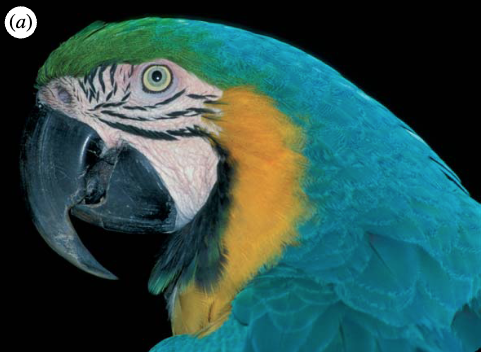
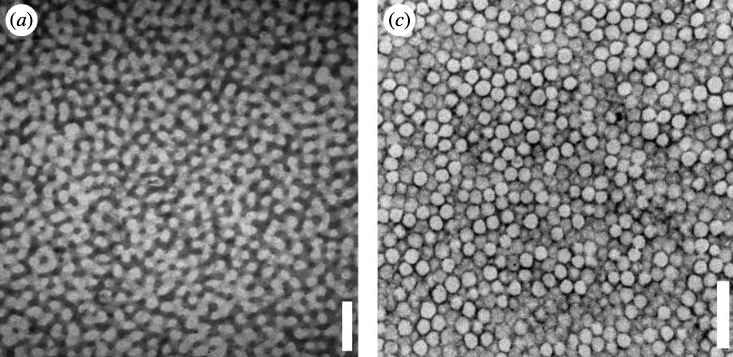
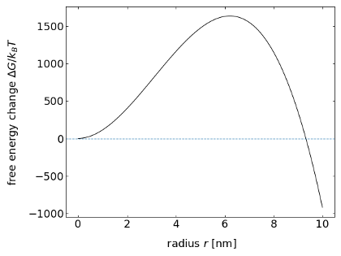
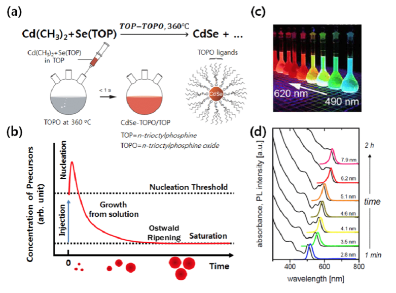

This page was generated from notebooks/L6/1_Kinetics_LL_Unmixing.ipynb.

Kinetics of Liquid–Liquid Unmixing#
If two liquids are brought together at a composition that is either unstable or metastable, they will phase separate. The kinetics of this phase separation can proceed in different ways.
Spinodal Decomposition – In this case, thermal fluctuations will amplify density fluctuations. The material will diffuse “uphill” to the regions of higher concentration to yield phase separation. The boundaries of the two phases are blurred in this case. Spinodal decomposition is the process of phase separation in the unstable region.
Nucleation – In the case of nucleation, a thermal fluctuation will create a nucleus of a critical size, which further grows in time. The nucleus has a sharp boundary with the other phase. Nucleation is the process of phase separation in the metastable region.
We will treat both kinetic regimes separately.
Spinodal decomposition#
Based on Fick’s law, we know that the diffusion currents occur in the direction against a composition gradient, i.e., \(J=-D∇\phi\). The result of that diffusion process is an equal composition in the whole sample. For phase separation to happen, material needs to flow from regions of low concentration to regions of higher concentration, so in the direction of the composition gradient. Material transport is therefore not balancing composition gradients. In the section about the chemical potential, we learned that in an open system the chemical potential of all species is balanced. The chemical potential is given by
\begin{equation} \mu=\frac{\mathrm dF}{\mathrm d\phi}|_{V,T}. \end{equation}
If now the second derivative of the free energy with respect to \(\phi\) is positive, the regions with larger \(\phi\) have larger free energy. Thus regions of lower concentration are favored by the free energy and the diffusion happens to be downhill as given also by Ficks law. If the second derivate of the free energy is, however, negative, then fluctuations in the composition will lower the free energy and, thus, the fluctuations will grow in strength. The fluctuations with different length scales will, however, not grow at the same rate. The spectrum of growth rates can be described by a phenomenological theory known as the Cahn–Hilliard equation, which is applied in many fields. To arrive at that equation, we need to describe the free energy in terms of composition gradients
\begin{equation} F=A\int \left [f_{0}(\phi)+\kappa \left( \frac{\mathrm d\phi}{\mathrm dx}\right)^2\right]\mathrm dx. \end{equation}
Here, \(f_0\) is the free energy density, \(A\) an area and \(x\) a linear coordinate. To balance the chemical potentials we need to modify Ficks laws
\begin{eqnarray} J &=& -D\frac{\mathrm d\phi}{\mathrm dx},\\ \frac{\mathrm d\phi}{\mathrm dt} &=& -\frac{\mathrm dJ}{\mathrm dx},\\ \frac{\partial\phi}{\partial t} &=& D\frac{\partial^{2}\phi}{\partial x^2} \end{eqnarray}
to an appropriate new law
\begin{equation} J=-M \frac{\mathrm d\mu}{\mathrm dx}, \end{equation}
where \(\mu=\mu_{\rm A}-\mu_{\rm B}\) is the difference between the chemical potentials of \(\mathrm{A}\) and \(\mathrm{B}\). This is apparently a linear approximation. According to the definition of the chemical potential, we obtain
\begin{equation} \mu=\frac{\mathrm d}{\mathrm d\phi}\left [f_{0}(\phi)+\kappa \left( \frac{\mathrm d\phi}{\mathrm dx}\right)^2\right] \end{equation}
from which follows
\begin{equation} \mu=\frac{\mathrm{d}f_{0}}{\mathrm d\phi}+2\kappa\frac{\mathrm d^2\phi}{\mathrm dx^2}, \end{equation}
where it was applied that
\begin{equation} \frac{\mathrm{d}}{\mathrm{d}\phi}\bigg(\frac{\mathrm{d}\phi}{\mathrm{d}x}\bigg)^2=\frac{\mathrm{d}x}{\mathrm{d}\phi}\frac{\mathrm{d}}{\mathrm{d}x}\bigg(\frac{\mathrm{d}\phi}{\mathrm{d}x}\bigg)^2=\frac{\mathrm{d}x}{\mathrm{d}\phi}\cdot \bigg(2\frac{\mathrm{d}\phi}{\mathrm{d}x}\bigg)\cdot\frac{\mathrm{d}}{\mathrm{d}x}\frac{\mathrm{d}\phi}{\mathrm{d}x}=2\frac{\mathrm{d}^2\phi}{\mathrm{d}x^2}. \end{equation}
Inserting this into our modified Ficks law yields
\begin{equation} J=-M f_{0}^{''}\frac{\mathrm d\phi}{\mathrm dx}-2M\kappa \frac{\mathrm d\phi^{3}}{\mathrm dx^3} \end{equation}
with \(f_0^{''}=(\mathrm{d}^2 f_0)/(\mathrm{d}ϕ^2)\). Finally, inserting the above equation into the continuity equation yields
\begin{equation} \frac{\partial \phi}{\partial t}=M f_{0}^{''}\frac{\partial ^2\phi}{\partial x^2}+2M\kappa \frac{\partial^4 \phi}{\partial x^4}. \end{equation}
This is the Cahn–Hilliard equation, which extends the diffusion equation for interacting species. The term in front of the second derivative yields an effective diffusion coefficient, i.e., \(D_{\rm eff}=M f_{0}^{''}\). While the coefficient \(M\) (the Onsager coefficient) is always positive, the second derivative of the free energy density \(f_0\) can be positive or negative. Inside the spinodal line, for example, the curvature of the free energy is negative. Following that, the effective diffusion coefficient is negative which allows for our uphill diffusion. The Cahn–Hilliard equation can be solved by a Fourier decomposition which yields
\begin{equation} \phi(x,t)=\phi_{0}+A\cos(qx)\exp\left [ -D_{\rm eff} q^{2}\left (1+\frac{2\kappa q^{2}}{f_{0}^{''}}\right ) t\right ]. \end{equation}
Here \(q\) is a wavenumber defining the wavelength of the fluctuations. The exponent can be abbreviated by
\begin{equation} R(q)= -D_{\rm eff} q^{2}\left (1+\frac{2\kappa q^{2}}{f_{0}^{''}}\right ) \end{equation}
which is nothing else as an inverse time or a rate coefficient. It provides the relaxation rate for a specific wavenumber. This rate coefficient is positive up to a certain wavenumber \(q_0\). All fluctuations with wavelengths larger than \(λ_0=2π/q_0\) are amplified in time. The fastest-growing fluctuation is obtained at \(q_{\rm max}\). This wavenumber sets the length scale of the structures, which typically appear during the spinodal decomposition.
Spinodal decomposition
Here is an example of the structure formation by spinodal decomposition taken from a recent paper:
The feathers of birds (see image) or even butterflies are in many cases not color because that contain dye molecules whose electronic transitions yield selective absorption.
Rather than that, these feathers are equipped with nanostructures at a given lengthscale which coherently scatter light as a Bragg lattice for example, or a photonic crystal. The image below shows two examples of such nanostructures that can selectively scatter light.
These structures are supposed to be formed by spinodal decomposition or nucleation and growth.
Nucleation#
Nucleation is the phenomenon of spontaneously generating a phase-separated volume by thermal fluctuations. By doing that, we create an interface between the two phases, which costs energy. We, therefore, have a first simple look at the interfacial energy.
Interfacial Tension#
If we have a system of two components A and B and those components do not mix but form an interface, then, due to the fact that both sorts of molecules repel each other, we have to spend energy to bring them together. The work done to create an interfacial area is
\begin{equation} W=F \Delta x=\gamma L \Delta x, \end{equation}
where \(γ\) denotes the interfacial energy. If work is done, this would require an energy exchange with a reservoir to keep the temperature constant. That, however, also means that the interfacial energy is a free energy per unit area rather than an internal energy. Interfacial energies may contain entropic contributions. In the case of a sharp interface, we can use the interaction parameter \(χ\) and the molecular volume \(v\) to show
\begin{equation} \gamma=\frac{1}{2v^{2/3}}(2\epsilon_{\rm AB}-\epsilon_{\rm AA}-\epsilon_{\rm BB})=\frac{\chi k_{\rm B}T}{zv^{2/3}}. \end{equation}
If we have a liquid mixture now at a certain composition, which is in the metastable region, i.e., \((∂^2 F)/(∂ϕ^2 )>0\), all of the density fluctuations in our system are damped and the spinodal decomposition can not happen. Therefore, the system has to phase separate by nucleation, i.e., that spontaneously a droplet of a certain size is formed and grows further. As we need energy to create the interface but also gain free energy by forming a volume phase, we need to have a look at the total free energy change, when the droplet is formed.
the volume part is delivering a free energy gain per volume of \(ΔF_v<0\), which has to be multiplied with the volume of the droplet.
the creation of an interface requires interfacial energy \(γ\), which is always positive and has to be multiplied with the droplet surface area.
Thus, the total free energy change reads
\begin{equation} \Delta F(r)=\frac{4}{3}\pi r^3\Delta F_{v}+4\pi r^2 \gamma. \end{equation}
Note, that the first term is negative as \(ΔF_v\) is negative. A typical free energy change with the particle size is shown in the figure below. It has a maximum at the position \(r^*\),which creates a nucleation barrier \(ΔG^*\). Droplets which are spontaneously formed at \(r<r^*\) can decrease their free energy by dissolving.
Liquid-Liquid Unmixing - Ouzo Effect
One example of liquid-liquid unmixing by nucleation is the Ouzo or Louche effect. The name denotes the spontaneous formation of a turbid microemulsion when a solution of anethol in ethanol is diluted with water. The figure below shows the phase digram of this ternary mixture, meaning that it has three components.

When the emulsification happens, the solution rapidly moves to the metastable region between the binodal and spinodal lines. It occurs because the alcohol, as it diffuses from the anethol into the water, carries with it some of the anethol molecules that still have a finite solubility in alcohol and alcohol/water mixtures. As the alcohol diffuses further into the water, the associating anethol(oil) molecules become expelled from the water-rich solution and are stranded in the form of fine emulsion droplets. Thus, adding water to a solution of homogeneous oil/ethanol mixtures leads to an abrupt decrease of the solubility of oil in the water-rich continuous phase. This effect causes the strong local concentration fluctuations of solute molecules and homogeneous nucleation can start.
The image below shows the turbidity of the emulsion to appear as the water content is changed.

The data has been taken from: Sitnikova, N. L., Sprik, R., Wegdam, G. & Eiser, E. Spontaneously Formed trans-Anethol/Water/Alcohol Emulsions: Mechanism of Formation and Stability. Langmuir 21, 7083–7089 (2005).
Nucleation and Growth
Another example of nucleation and growth is the growth of tiny ssemiconductor nanocrystals from solution. Such quantum dots confine electron hole pairs and have size dependent optical properties. This finding was awareded with the nobel prize in chemistry in 2023.
